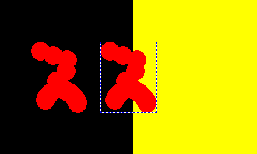
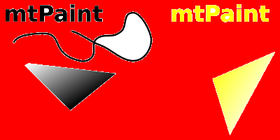
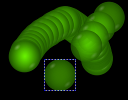
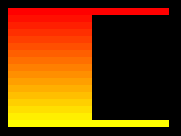

The selection tool is used to mark out areas on the canvas. Once these areas have been defined then you can do various operations such as filling, drawing an outline or copying and pasting. These operations can be accessed via the Selection menu or on the tools toolbar. The Edit menu has the cut and paste options.
Unlike most other painting programs mtPaint does not have "selections", instead it uses a selection channel which allows you to specify which pixels will be copied. For example if you want an elliptical selection, you draw the ellipse in the selection channel, then select and copy a rectangle, or polygon, around it. If you want a selection that is a union of some shapes, you draw all the shapes in the selection channel; if you want to unselect some part, you erase it in the selection channel (draw with value 0). See the channels chapter for more information and examples of how this works.
Paste function in mtPaint works in a somewhat unusual way; you position the paste area over the canvas and commit the paste by right clicking or by pressing Enter - and you can do so repeatedly until you dismiss the paste by pressing Escape. Selecting another tool dismisses paste, but does not commit it unless that is enabled in the Interface section of the Preferences window.
The rectangle selection works by clicking on the canvas and dragging from one corner to another. After you have made a selection, clicking again anywhere on the canvas will move the selection's nearest corner to the cursor position, and you may then drag to place it more precisely. With the tool mouse cursor option switched on you will see the relevant corner arrow to indicate this new behaviour. This way, a new selection can be made with no dragging, just by clicking two opposite corners of an area.
To drag only one side of the rectangle, not a corner, you hold Shift to keep the width unchanged, or Ctrl+Shift to keep the height.
If you want to select the whole image press Ctrl-A. To clear this selection press Escape, the right mouse button, Ctrl+Shift-A or use the Selection menu. The selection box can be moved around pixel by pixel by using the arrow keys. Pressing Shift and the arrow keys causes the selection box to be moved a set number of pixels determined by the Preferences window. Pressing Ctrl and the arrow keys moves one side of the box, changing its heiht or width pixel by pixel; with Ctrl+Shift, the side is moved a set number of pixels at once.
After selecting this tool you click the left mouse button on the canvas where you want to start forming the polygon shape. You can then either hold the left button down for a freehand shape or release it to have a long straight edge. To finish press the right button. You can also create an polygon by holding down the right mouse button and then dragging. In this case, releasing the right button completes the polygon. To cancel the shape press the Escape key.
While creating the polygon, you can delete the current vertex with Ctrl+right click. After the polygon is completed, a Ctrl+right click will remove the vertex nearest to the cursor position.
Once a selection has been made you can use the lasso tool to shrink wrap the edges of the selection with the same colour. This feature works by flood filling transparent pixels, starting at the first point of the polygon selection or the top left of the rectangular selection. For example:


Using the Selection menu you can also 'lasso cut' an area which fills the lasso selected area on the canvas.
If you have made no selection on the canvas, the lasso tool will shrink wrap the current clipboard (starting at the top left, as with a rectangular selection).
If you want the lasso tool to ignore the colours, and just shrink wrap the selection shape defined by the selection channel, then right click on the lasso tool icon and check the option 'By selection channel'.
If you want a smoother transition around a selection instead of a sharp boundary, you can feather its edges, similar to the example in section 7.5.10.
While you are pasting it is possible to make certain colours in the paste invisible. For example:


You can do this with as many colours as you want, just keep repeating the procedure. Selecting Selection->Clear Mask will remove the mask entirely.
Normal copying and pasting involves copying whole pixels from one area to another. However, it is possible to use an alpha channel to blend certain areas more smoothly. For example, here is a flat RGB image that has been exported from Inkscape that contains several smooth edges and colour blends:

If I were to lasso the objects and paste them over a red background, it would look like this:

As you can see the edges of the objects look odd, and the blends look out of place. There is a function in mtPaint that allows you to extract the blending properties of a paste and put them over any background while keeping the smoothness. As an example, use the first image above as a start point and then:
You should then see:


This technique works on any simple blend from one foreground colour to a background colour. It works well with antialiasing as found around text and geometric shapes created with programs like Inkscape which are exported to a lossless format like PNG. Note that you must export a PNG image from Inkscape with a flat colour background, not a transparent background.
If you have colour A and B as the same colour you can turn that colour to alpha in the selection and blend all other colours to shades of alpha. For example, if you take the above image as an example, copy the top section, set colour A and B as pure white and then paste the result after applying "Selection->Alpha blend A,B" you will get the following result:

This method works well when the source has a single colour background, with several foreground colours of a totally different colour type.
mtPaint allows the user to store up to 12 images in a multiple image clipboard. This works by saving a PNG file containing the clipboard image and then using the Edit menu to load these images as required.
The feature also means that you can have two independent mtPaint programs running and be able to load and save clipboard data between the two at the touch of a button. Also, as long as the files are not deleted you will have access to these clipboard images after closing and restarting mtPaint, or even rebooting the system.
It is possible to paste an RGB clipboard onto an RGB image and an Indexed Palette clipboard onto an Indexed Palette or RGB image. As the clipboard files are standard PNG files, the user can also open them in another mtPaint process and edit them. The clipboard files are stored in the location set in the Preferences window.
mtPaint uses its own internal clipboard which other programs cannot touch without permission. In the Edit menu, you can use the "Import clipboard from system" command to copy clipboard contents from some other program into mtPaint, or "Export clipboard to system" to let other programs paste the contents of mtPaint's clipboard. In case mtPaint cannot import the clipboard, an error message will be displayed; if you see no error but a paste area did not appear either, it means the imported clipboard is RGB while the current image is Indexed Palette, and cannot be pasted.
While you are pasting, you can hold both the left and right mouse buttons at the same time to achieve a brush pasting effect. If you are pasting an object with a non rectangular edge you can achieve some interesting effects like this:

Here I have pasted a semi transparent orb with the opacity mode switched off.
Using the the rectangle selection tool and the selection menu ramp options you can create a vertical or horizontal ramp between 2 points or lines on the canvas. In this zoomed example I have created a ramp between a red and yellow line to create a perfectly smooth gradient:

What the options do, is take the leftmost and the rightmost colours of each row (horizontal ramp), or the topmost and the bottommost ones of every column (vertical ramp) inside the selection area, and fill the row/column with an RGB transition between the two. If "Use gamma correction when painting" setting is enabled, the transition will be linear RGB (sRGB).
As well as canvas effects the ramp can also be combined with the palette copying featuring in section 3.3.7 to create perfectly spaced one or two dimensional palettes.
When editing an image containing many fixed sized tiles its nice to swap 2 areas of the canvas with a minimum of effort. To do this you can use the paste swap:
You can repeat these steps many times to switch many tiles in sequence. In some situations where there are no guidelines on the canvas, cutting the original area is more useful as it leaves a hole which you can aim for later when pasting the final item.